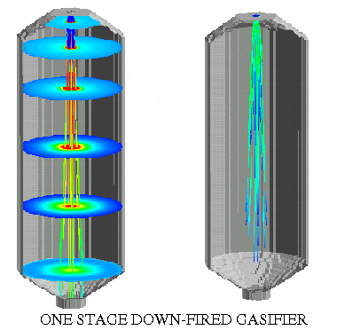

The Gasifier module can be used to model either one stage or two stage gasifiers. One stage gasifiers are typified by a single set of injectors positioned in either a down flow (shown below) or upflow design. Two stage gasifiers usually have two larger compartments separated by a thin necked center section. Two stage gasifiers use two sets of injectors fired directly into each of the larger compartments (shown at right).
When the one stage type is specified, only the first injector of the User Interface is active. When a two stage gasifier is selected, the user must input values for each of the three injectors (see diagram at right). 